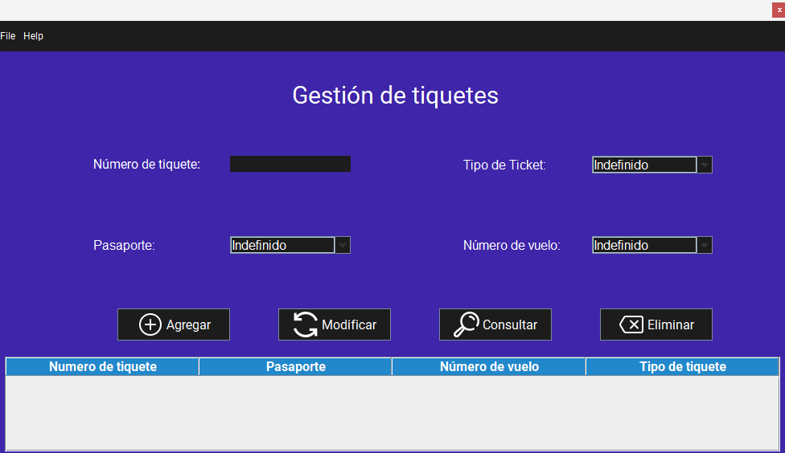
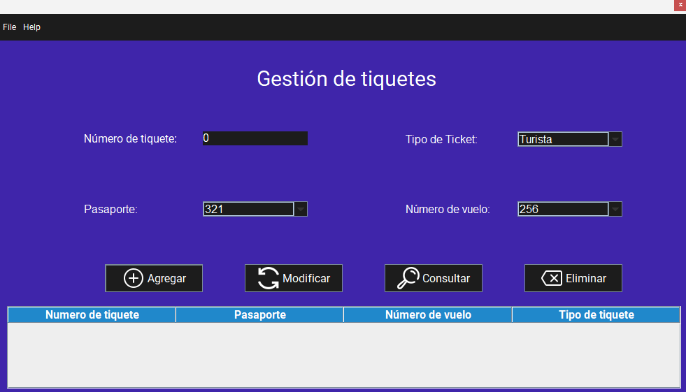
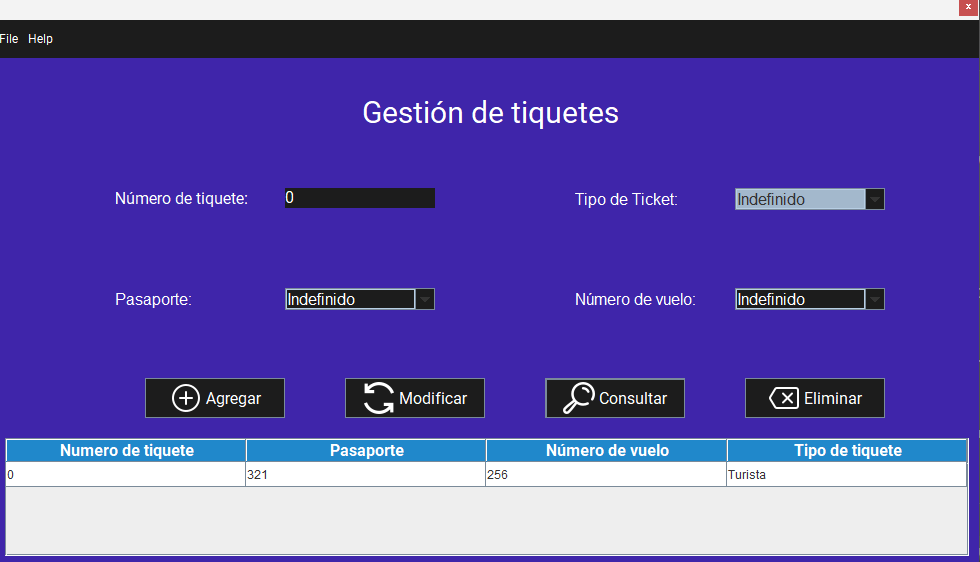
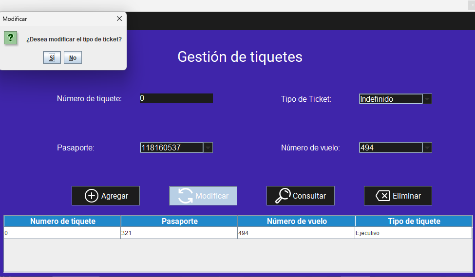
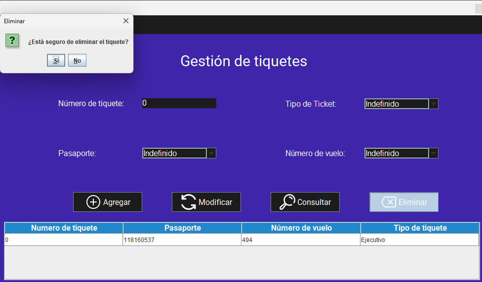

Pantalla principal:
Al iniciar la aplicación, se muestra la pantalla principal de la gestión de tiquetes. Esta pantalla permite agregar, modificar y eliminar tiquetes, así como consultar la lista de tiquetes registrados en el sistema.
Funcionalidades:
1. Agregar un tiquete
Para agregar un tiquete, siga estos pasos:
- Inicie la aplicación.
- Ingrese los datos en cada campo de texto (Número de tiquete, pasaporte, tipo de tiquete, número de vuelo).
- Haga clic en el botón "Agregar". 
Advertencias
2. Consultar un tiquete
Para consultar un tiquete, siga estos pasos:
- Inicie la aplicación.
- Si desea consultar la información de todos los tiquetes registrados, simplemente haga clic en el botón "Consultar".
- Si desea consultar la información de un tiquete específico, ingrese el número de pasaporte del tiquete en el campo de texto (Número de pasaporte).
- Haga clic en el botón "Consultar". 
Advertencias
3. Modificar un tiquete
Para modificar un tiquete, siga estos pasos:
- Inicie la aplicación.
- Realice una consulta del tiquete que desea modificar, siguiendo los pasos mencionados anteriormente.
- Ingrese los que desea modificar en cada campo de texto (Número de pasaporte, Número de pasaporte, apellidos, fecha de nacimiento, correo eléctronico, teléfono).
- Haga clic en el botón "Modificar". 
Advertencias:
4. Eliminar un tiquete
Para eliminar un tiquete, siga estos pasos:
- Inicie la aplicación.
- Realice una consulta del tiquete que desea eliminar, siguiendo los pasos mencionados anteriormente.
- Una vez que se muestre la información del tiquete, haga clic en el botón "Eliminar".
- Se mostrará una confirmación de eliminación, donde deberá confirmar su acción.
- Una vez confirmado, el Tiquete será eliminado del sistema. 
Advertencia: